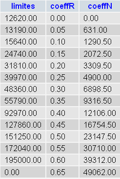

10. Operação [IMPOTS] com MySQL
 |
10.1. Transferência de um ficheiro de texto para uma tabela MySQL
O script a seguir irá transferir os dados do seguinte ficheiro de texto:
12620:13190:15640:24740:31810:39970:48360:55790:92970:127860:151250:172040:195000:0
0:0.05:0.1:0.15:0.2:0.25:0.3:0.35:0.4:0.45:0.5:0.55:0.6:0.65
0:631:1290.5:272.5:3309.5:4900:6898.5:9316.5:12106:16754.5:23147.5:30710:39312:49062
para a tabela [impots] da base de dados MySQL [dbimpots] a seguir:
 |
A ligação à base de dados [dbimpots] será efetuada com a identidade (root,"").
Vamos utilizar a seguinte arquitetura:
 |
O script [console] que vamos escrever utilizará a classe [ImpotsFile] para aceder aos dados do ficheiro de texto. O acesso em escrita à base de dados será feito através dos métodos abordados anteriormente.
O código do script é o seguinte:
# -*- coding=utf-8 -*-
# importação do módulo das classes de impostos
from impots import *
import re
# --------------------------------------------------------------------------
def copyToMysql(limites,coeffR,coeffN,HOTE,USER,PWD,BASE,TABLE):
# cópia as 3 tabelas numéricas de limites, coeffR, coeffN
# para a tabela TABLE da base de dados MySQL BASE
# a base de dados MySQL encontra-se na máquina HOTE
# o utilizador é identificado por USER e PWD
# colocamos as consultas SQL numa lista
# eliminação da tabela
requetes=["drop table %s" % (TABLE)]
# criação da tabela
requete="create table %s (limites decimal(10,2), coeffR decimal(6,2), coeffN decimal(10,2))" % (TABLE)
requetes.append(requete)
# preenchimento
for i in range(len(limites)):
# consulta de inserção
requetes.append("insert into %s (limites,coeffR,coeffN) values (%s,%s,%s)" % (TABLE,limites[i],coeffR[i],coeffN[i]))
# executam-se os comandos SQL
return executerCommandes(HOTE,USER,PWD,BASE,requetes,False,False)
def executerCommandes(HOTE,ID,PWD,BASE,requetes,suivi=False,arret=True):
# utiliza a ligação (HOTE,ID,PWD,BASE)
# executa, nesta ligação, os comandos SQL contidos na lista de pedidos
# se acompanhamento=True, então cada execução de um comando SQL é acompanhada por uma mensagem indicando o seu sucesso ou falha
# se «parar=False», a função pára ao primeiro erro encontrado; caso contrário, executa todos os comandos SQL
# a função devolve uma lista (n.º de erros, erro1, erro2, ...)
# ligação
try:
connexion=MySQLdb.connect(host=HOTE,user=ID,passwd=PWD,db=BASE)
except MySQLdb.OperationalError,erreur:
return [1,"Erreur lors de la connexion a MySQL sous l'identite (%s,%s,%s,%s) : %s" % (HOTE, ID, PWD, BASE, erreur)]
# solicita-se um cursor
curseur=connexion.cursor()
# execução das consultas SQL contidas na lista de consultas
# estão a ser executadas — inicialmente sem erros
erreurs=[0]
for i in range(len(requetes)):
# a consulta é colocada numa variável local
requete=requetes[i]
# a consulta está vazia?
if re.match(r"^\s*$",requete):
continue
# execução da consulta i
erreur=""
try:
curseur.execute(requete)
except Exception, erreur:
pass
# ocorreu algum erro?
if erreur:
# mais um erro
erreurs[0]+=1
# mensagem de erro
msg="%s : Erreur (%s)" % (requete[0:len(requete)-1],erreur)
erreurs.append(msg)
# acompanhar no ecrã ou não?
if suivi:
print msg
# paramos?
if arret:
return erreurs
else:
if suivi:
# exibimos a consulta sem o seu símbolo de fim de linha
print "%s : Execution reussie" % (cutNewLineChar(requete))
# informações sobre o resultado da consulta executada
afficherInfos(curseur)
# encerrar a ligação
try:
connexion.commit()
connexion.close()
except MySQLdb.OperationalError,erreur:
# mais um erro
erreurs[0]+=1
# mensagem de erro
msg="%s : Erreur (%s)" % (requete,erreur)
erreurs.append(msg)
# retorno
return erreurs
# ------------------------------------------------ principal
# identidade do utilizador
USER="root"
PWD=""
# o computador anfitrião do SGBD
HOTE="localhost"
# identidade da base de dados
BASE="dbimpots"
# identidade da tabela de dados
TABLE="impots"
# o ficheiro de dados
IMPOTS="impots.txt"
# instanciação da camada [dao]
try:
dao=ImpotsFile(IMPOTS)
except (IOError, ImpotsError) as infos:
print ("Une erreur s'est produite : {0}".format(infos))
sys.exit()
# transferimos os dados recuperados para uma tabela MySQL
erreurs=copyToMysql(dao.limites,dao.coeffR,dao.coeffN,HOTE,USER,PWD,BASE,TABLE)
if erreurs[0]:
for i in range(1,len(erreurs)):
print erreurs[i]
else:
print "Transfert opere"
# fim
sys.exit()
Notas:
- linhas 106-110: instanciamos a classe [ImpotsFile] apresentada no parágrafo 8.1;
- linha 113: os tabuleiros limites, coeffR e coeffN são transferidos para uma base de dados MySQL;
- linha 8: a função copyToMysql executa esta transferência. A função copyToMysql cria uma tabela com as consultas a executar e faz com que estas sejam executadas pela função executerCommandes, linha 25;
- linhas 28-89: a função executerCommandes é a já apresentada anteriormente, no parágrafo 9.7, com uma diferença: em vez de estarem num ficheiro de texto, as consultas encontram-se numa lista;
O ficheiro de texto impots.txt:
12620:13190:15640:24740:31810:39970:48360:55790:92970:127860:151250:172040:195000:0
0:0.05:0.1:0.15:0.2:0.25:0.3:0.35:0.4:0.45:0.5:0.55:0.6:0.65
0:631:1290.5:272.5:3309.5:4900:6898.5:9316.5:12106:16754.5:23147.5:30710:39312:49062
Resultados no ecrã:
Verificação com phpMyAdmin:
10.2. O programa de cálculo do imposto
Agora que os dados necessários para o cálculo do imposto se encontram numa base de dados, podemos escrever o script de cálculo do imposto. Utilizamos novamente uma arquitetura de três camadas:
 |
A nova camada [dao] será ligada à SGBD e à MySQL e será implementada pela classe [ImpotsMySQL]. Esta camada irá oferecer à camada [metier] a mesma interface que anteriormente, constituída pelo único método getData, que devolve a tupla (limites, coeffR, coeffN). Assim, a camada [metier] não sofrerá alterações em relação à versão anterior.
10.3. A classe [ImpotsMySQL]
A camada [dao] é agora implementada pela seguinte classe [ImpotsMySQL] (ficheiro impots.py):
class ImpotsMySQL:
# construtor
def __init__(self,HOTE,USER,PWD,BASE,TABLE):
# inicializa os atributos de limites, coeffR, coeffN
# os dados necessários para o cálculo do imposto foram colocados na tabela mysqL TABLE
# pertencente à base de dados BASE. A tabela tem a seguinte estrutura
# limites decimal(10,2), coeffR decimal(10,2), coeffN decimal(10,2)
# a ligação à base de dados MySQL da máquina HOTE é efetuada com a identidade (USER,PWD)
# lança uma exceção em caso de erro
# ligação à base de dados MySQL
connexion=MySQLdb.connect(host=HOTE,user=USER,passwd=PWD,db=BASE)
# solicita-se um cursor
curseur=connexion.cursor()
# leitura em bloco da tabela TABLE
requete="select limites,coeffR,coeffN from %s" % (TABLE)
# executa a consulta [requete] na base de dados [base] da ligação [connexion]
curseur.execute(requete)
# análise do resultado da consulta
ligne=curseur.fetchone()
self.limites=[]
self.coeffR=[]
self.coeffN=[]
while(ligne):
# linha atual
self.limites.append(ligne[0])
self.coeffR.append(ligne[1])
self.coeffN.append(ligne[2])
# linha seguinte
ligne=curseur.fetchone()
# desligar
connexion.close()
def getData(self):
return (self.limites, self.coeffR, self.coeffN)
Notas:
- linha 18: a consulta SQL SELECT que solicita os dados da base de dados MySQL. As linhas de resultados da consulta SELECT são, em seguida, processadas uma a uma pela consulta [curseur.fetchone] (linhas 22 e 32) para criar as tabelas limites, coeffR e coeffN (linhas 28-30);
- o método getData da interface da camada [dao].
10.4. O script da consola
O código do script da consola (impots_04) é o seguinte:
# -*- coding=utf-8 -*-
# importação do módulo das classes Impostos*
from impots import *
# ------------------------------------------------ main
# a identidade do utilizador
USER="root"
PWD=""
# a máquina anfitriã do SGBD
HOTE="localhost"
# identidade da base de dados
BASE="dbimpots"
# identidade da tabela de dados
TABLE="impots"
# ficheiro de entradas
DATA="data.txt"
# ficheiro de saída
RESULTATS="resultats.txt"
# instância da camada [metier]
try:
metier=ImpotsMetier(ImpotsMySQL(HOTE,USER,PWD,BASE,TABLE))
except (IOError, ImpotsError) as infos:
print ("Une erreur s'est produite : {0}".format(infos))
sys.exit()
# os dados necessários para o cálculo do imposto foram colocados no ficheiro IMPOTS
# à razão de uma linha por tabela, na forma
# val1:val2:val3,...
# leitura dos dados
try:
data=open(DATA,"r")
except:
print "Impossible d'ouvrir en lecture le fichier des donnees [DATA]"
sys.exit()
# abertura do ficheiro de resultados
try:
resultats=open(RESULTATS,"w")
except:
print "Impossible de creer le fichier des résultats [RESULTATS]"
sys.exit()
# utilitários
u=Utilitaires()
# processa-se a linha atual do ficheiro de dados
ligne=data.readline()
while(ligne != ''):
# remove-se o eventual caractere de fim de linha
ligne=u.cutNewLineChar(ligne)
# recuperam-se os 3 campos «casado:filhos:salário» que compõem a linha
(marie,enfants,salaire)=ligne.split(",")
enfants=int(enfants)
salaire=int(salaire)
# calcula-se o imposto
impot=metier.calculer(marie,enfants,salaire)
# regista-se o resultado
resultats.write("{0}:{1}:{2}:{3}\n".format(marie,enfants,salaire,impot))
# lê-se uma nova linha
ligne=data.readline()
# fecham-se os ficheiros
data.close()
resultats.close()
Notas:
- linha 23: instanciação das camadas [dao] e [metier];
- o resto do código é conhecido.
Os mesmos que nas versões anteriores do exercício.